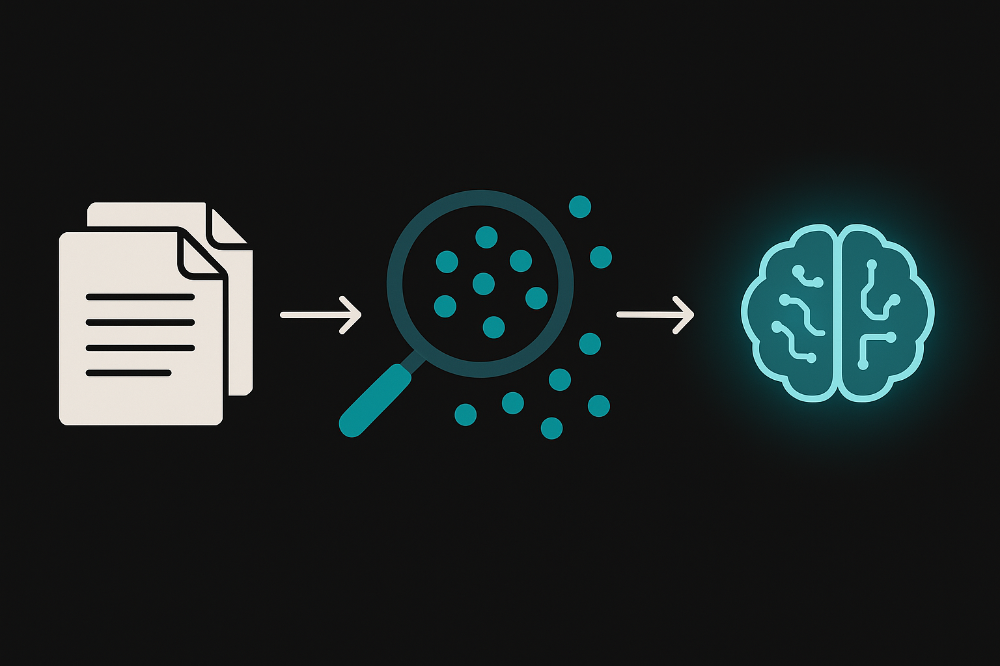

社内ドキュメントをAIが検索・回答するRAGシステムを構築します。LangChainの基礎からベクトルDB、チャンク戦略、検索精度チューニング、LangGraphによるマルチステップRAG、LangSmithでの監視まで。LangGraphまでカバーする日本語コースは他にありません。

Retrieval-Augmented Generation(検索拡張生成)。LLM単体では学習データに含まれない社内文書や最新情報を参照できませんが、RAGは外部データソースから関連情報を検索し、その結果をプロンプトに挿入してからLLMに回答を生成させます。知識の鮮度と正確性を飛躍的に改善する手法です。
仕組みを一言でまとめると「質問が来たら、まず関連文書を探し、見つけた文書を添えてLLMに渡す」だけ。シンプルですが、検索精度とチャンク戦略次第で回答品質が大きく変わります。
%%{init:{'theme':'dark','themeVariables':{'primaryColor':'#00A5BF','primaryBorderColor':'#007A8F','primaryTextColor':'#e8e8e8','lineColor':'#00A5BF','secondaryColor':'#1a1a1a','background':'#141414','mainBkg':'#1a1a1a','nodeBorder':'#00A5BF'}}}%%
graph LR
subgraph Indexing["Indexing Phase"]
A["ドキュメント読込"] --> B["チャンク分割"]
B --> C["Embedding
(ベクトル変換)"]
C --> D["ベクトルDB
に格納"]
end
subgraph Query["Query Phase"]
E["ユーザーの質問"] --> F["質問を
Embedding"]
F --> G["類似検索
(Top-K)"]
G --> H["関連チャンク
を取得"]
end
subgraph Generation["Generation Phase"]
H --> I["プロンプト構築
(質問+文脈)"]
I --> J["LLM回答生成"]
end
PDF、CSV、Webページなどのドキュメントをチャンク(断片)に分割し、各チャンクをEmbeddingモデルでベクトル化してDBに格納します。この前処理の質がRAG全体の精度を左右するため、チャンクサイズやoverlap設定は慎重に決める必要があります。
ユーザーの質問も同じEmbeddingモデルでベクトル化し、ベクトルDB内で類似度の高いチャンクをTop-K件取得します。コサイン類似度やユークリッド距離が代表的な類似度指標です。
取得したチャンクを「参考情報」としてプロンプトに挿入し、LLMに回答を生成させます。プロンプトには「以下の情報のみを参照して回答してください」と制約を加えることで、ハルシネーションを抑制できます。
| 手法 | 特徴 | 精度 | 実装難度 |
|---|---|---|---|
| Naive RAG | 単純な検索+生成。チャンク分割→ベクトル検索→LLM呼出し | 中 | 低 |
| Advanced RAG | Re-ranking、Hybrid Search、Query Transform等で検索精度を改善 | 高 | 中 |
| Modular RAG | 検索/生成/評価をモジュール化しグラフで制御。LangGraphと相性がよい | 最高 | 高 |
| 場面 | RAGの要否 | 理由 |
|---|---|---|
| 社内データに基づく質問応答 | 有効 | LLMの学習データに含まれない社内固有の情報を参照する必要がある |
| 最新ニュースに基づく回答 | 有効 | LLMの知識カットオフ以降の情報が必要 |
| 法令や規約の正確な引用 | 有効 | 一言一句正確に引用する必要があり、ハルシネーション防止に必須 |
| 一般的なプログラミング質問 | 不要 | LLMの学習データに十分含まれており、検索結果がノイズになる |
| ブレインストーミング・創作 | 不要 | 正確な事実参照より自由な発想が求められる場面 |
| 翻訳・要約(入力テキストが与えられる場合) | 不要 | 処理対象のテキストが入力として渡されるため外部検索が不要 |
Q1. RAGの3つのフェーズを正しい順序で並べたものはどれですか?
Q2. Advanced RAGがNaive RAGより精度が高い主な理由は?
最初の2問はドキュメントから正確に回答されます。3問目の「社員食堂の営業時間」はドキュメントに情報がないため、「情報が見つかりませんでした」と返答されるのが理想的な動作です。プロンプトの制約指示がハルシネーション抑制に効いていることを確認してください。
LangChainはLLMアプリケーション構築のデファクトフレームワークです。v0.3では設計が大きく整理され、langchain-coreを軸にプロバイダー別パッケージへ分離されました。
| パッケージ | 役割 | インストール |
|---|---|---|
| langchain-core | 基盤クラス: Runnable, PromptTemplate, OutputParser | pip install langchain-core |
| langchain-openai | OpenAI統合: ChatOpenAI, OpenAIEmbeddings | pip install langchain-openai |
| langchain-community | コミュニティ統合: 各種ローダー、ベクトルDB | pip install langchain-community |
| langchain | 高レベルChain(legacy含む) | pip install langchain |
| langgraph | ステートマシン/グラフ実行(Sec06で詳説) | pip install langgraph |
LLMとの対話を抽象化。ChatOpenAI、ChatAnthropic等のプロバイダー実装を差し替え可能。temperatureやmax_tokensを設定します。
変数を埋め込めるテンプレート。ChatPromptTemplateはsystem/human/aiメッセージを組み立てます。再利用性が高く、プロンプト管理が容易に。
LLMの出力を構造化データに変換。StrOutputParser(文字列)、JsonOutputParser(JSON)、PydanticOutputParser(型付きオブジェクト)。
パイプ演算子(|)でコンポーネントを連結。prompt | llm | parserのように宣言的にChainを組みます。非同期、ストリーミング、バッチ処理を自動サポート。
LCELはUnixパイプに似た考え方です。各コンポーネントはRunnableインタフェースを実装しており、前のコンポーネントの出力が次の入力になります。
%%{init:{'theme':'dark','themeVariables':{'primaryColor':'#00A5BF','primaryBorderColor':'#007A8F','primaryTextColor':'#e8e8e8','lineColor':'#00A5BF','secondaryColor':'#1a1a1a','background':'#141414','mainBkg':'#1a1a1a','nodeBorder':'#00A5BF'}}}%%
graph LR
A["PromptTemplate
{topic}を埋める"] -->|"|"| B["ChatModel
LLMに送信"]
B -->|"|"| C["OutputParser
文字列に変換"]
style A fill:#1a1a1a,stroke:#00A5BF
style B fill:#1a1a1a,stroke:#00A5BF
style C fill:#1a1a1a,stroke:#00A5BF
最も基本的なパターン。テンプレートにトピックを埋めてLLMに送信し、文字列で受け取ります。
前のChainの出力を次のChainの入力にする連鎖パターン。要約→翻訳のように段階処理に使います。
質問の内容に応じて異なるChainにルーティングします。「技術質問」と「業務質問」で回答スタイルを切り替える例です。
パイプ演算子(|)はPythonの__or__メソッドをオーバーロードしています。chain = a | b | cと書くと、内部的にはRunnableSequence([a, b, c])が生成されます。各要素のinvoke/ainvoke/stream/batchが統一インタフェースで呼び出される仕組みです。
RAGの「検索」を支えるのがベクトルデータベースです。テキストを数百〜数千次元のベクトルに変換し、類似度で検索します。SQLのLIKE検索とは根本的に異なり、「意味的に近い」文書を見つけられるのが最大の強みです。
Embeddingモデルはテキストを固定長のベクトル(数値の配列)に変換します。意味が近い文は近いベクトル空間上に配置される性質を持ちます。「犬」と「猫」のベクトルは近く、「犬」と「経済学」は遠くなります。
%%{init:{'theme':'dark','themeVariables':{'primaryColor':'#00A5BF','primaryBorderColor':'#007A8F','primaryTextColor':'#e8e8e8','lineColor':'#00A5BF','secondaryColor':'#1a1a1a','background':'#141414','mainBkg':'#1a1a1a','nodeBorder':'#00A5BF'}}}%%
graph LR
A["テキスト
有給休暇は10日"] --> B["Embedding
Model"]
B --> C["ベクトル
[0.12, -0.34, 0.56, ...]
1536次元"]
D["テキスト
休みは何日?"] --> E["Embedding
Model"]
E --> F["ベクトル
[0.11, -0.31, 0.58, ...]
1536次元"]
C --> G["コサイン類似度
= 0.92(高い)"]
F --> G
| 項目 | Chroma | FAISS | Pinecone |
|---|---|---|---|
| 提供形態 | OSS / ローカル | Meta製OSS / ローカル | クラウドマネージド |
| セットアップ | pip install chromadb | pip install faiss-cpu | pip install pinecone-client |
| スケーラビリティ | 中(数万件向け) | 高(数百万件対応) | 最高(自動スケール) |
| 検索速度(100K件) | 数十ms | 数ms | 数十ms(ネットワーク込み) |
| 永続化 | ローカルファイル | ローカルファイル | クラウド(自動) |
| 適用場面 | プロトタイプ、小規模RAG | 大規模・高速検索 | 本番運用、チーム利用 |
Embeddingモデルの選択はRAGの検索精度に直結します。コスト、精度、日本語対応の3軸で代表的なモデルを比較します。
| モデル | 提供元 | 次元数 | 日本語精度 | コスト(100万トークン) | 特徴 |
|---|---|---|---|---|---|
| text-embedding-3-small | OpenAI | 1536 | 良好 | $0.02 | コスパ最良。ほとんどのRAGでこれを選ぶのが正解 |
| text-embedding-3-large | OpenAI | 3072 | 良好 | $0.13 | 精度重視。ストレージ2倍・コスト6.5倍で精度向上は数%程度 |
| embed-multilingual-v3.0 | Cohere | 1024 | 優秀 | $0.10 | 多言語対応が強み。日本語+英語の混在ドキュメントに最適 |
| BGE-M3 | BAAI(OSS) | 1024 | 優秀 | 無料(セルフホスト) | オープンソース。ローカルで動かせるため機密データ向き |
| multilingual-e5-large | Microsoft(OSS) | 1024 | 優秀 | 無料(セルフホスト) | HuggingFace上で利用可能。日本語ベンチマークで高スコア |
Pineconeはクラウドサービスのため、APIキーの取得とインデックス作成が必要です。pinecone.io で無料アカウントを作成し、langchain-pineconeパッケージを使います。本番環境でスケーラビリティが必要な場合に検討してください。
Sec01-03で学んだRAGの基本構造を1本のスクリプトにまとめます。ドキュメント読込からChroma格納、LLMによる回答生成まで通しで実装してください。
RAGの品質はドキュメントの前処理で8割決まると言っても過言ではありません。どの形式をどう読み込み、どの粒度で分割するか。この設計を雑にすると、どれだけ高性能なLLMを使っても回答精度は頭打ちになります。
| 形式 | ローダー | パッケージ | 備考 |
|---|---|---|---|
| PyPDFLoader | langchain-community | ページ単位で分割。OCR不要のテキストPDF向け | |
| CSV | CSVLoader | langchain-community | 行単位でDocumentに変換 |
| Excel | UnstructuredExcelLoader | langchain-community | unstructuredパッケージが必要 |
| Web | WebBaseLoader | langchain-community | BeautifulSoupでHTML→テキスト |
| Notion | NotionDirectoryLoader | langchain-community | エクスポートしたMarkdownを読込 |
| GitHub | GitLoader | langchain-community | リポジトリのコードを読込 |
文字数で機械的に分割。実装が最も簡単だが、文の途中で切れるリスクがあります。CharacterTextSplitterで実現。
段落→文→単語の順で再帰的に分割。文脈を保ちやすく、多くのケースでベストプラクティスです。RecursiveCharacterTextSplitterがデフォルト選択肢。
Embeddingの類似度が変化する箇所で分割。意味の区切りで切れるため精度が高いが、Embedding計算コストが発生します。SemanticChunkerで実現。
Markdown見出し、HTMLタグ、PDFのページ区切りなど、ドキュメントの構造を利用。MarkdownHeaderTextSplitter等。
チャンクサイズはトレードオフです。小さすぎると1チャンクに十分な文脈が含まれず、大きすぎるとノイズが増えて検索精度が落ちます。
| パラメータ | 推奨値 | 考慮点 |
|---|---|---|
| chunk_size | 500〜1000文字 | Q&Aなら短め(300-500)、技術文書なら長め(800-1200) |
| chunk_overlap | chunk_sizeの10〜20% | 前後のチャンクの意味的接続を維持する |
チャンク間のオーバーラップは「前後のチャンクの文脈を繋ぐ接着剤」です。設定値による影響を具体例で示します。
例えば以下の3文を含むドキュメントを、chunk_size=100で分割する場合を考えます。
文A(50文字): 「リモートワークは週3日まで利用可能です。」
文B(50文字): 「利用にはHRシステムから事前申請が必要です。」
文C(50文字): 「申請は上長の承認後、翌営業日に有効になります。」
| overlap設定 | Chunk 1の内容 | Chunk 2の内容 | 「申請方法は?」の検索精度 |
|---|---|---|---|
| 0%(重複なし) | 文A + 文B | 文C のみ | 低 -- 文Bと文Cの関連が切れるため、Chunk 2だけでは申請→承認の流れが不明 |
| 10%(10文字) | 文A + 文B | 文Bの末尾10文字 + 文C | 中 -- 「事前申請が必要」の断片がChunk 2にも含まれ、文脈が部分的に繋がる |
| 20%(20文字) | 文A + 文B | 文Bの後半20文字 + 文C | 高 -- 「HRシステムから事前申請が必要」がChunk 2にも含まれ、申請→承認の一連の流れが検索で引ける |
実務での推奨値はchunk_sizeの10〜20%。20%を超えるとストレージの無駄が増え、検索速度にも影響します。FAQのような短い独立した項目の場合は0%でも問題ありません。
RAGの回答品質はRetrievalフェーズの精度に強く依存します。良い文書を引けなければ、どれほど優れたLLMでもまともな回答は返せません。ここでは検索精度を引き上げる5つの手法を実装します。
| 手法 | 概要 | 効果 |
|---|---|---|
| Top-K調整 | 取得するチャンク数を調整(k=3〜5が一般的) | 適切なkで情報不足/ノイズ過多を防止 |
| Score閾値 | 類似度がn以上のチャンクだけ採用 | 無関係な低スコア文書を除外 |
| Hybrid Search | ベクトル検索 + キーワード検索(BM25)の組み合わせ | 意味検索とキーワード一致の両方を活用 |
| Re-ranking | 検索結果をCross-EncoderやCohere Rerankで再順位付け | Top-K内の順序を最適化 |
| Multi-Query | 1つの質問を複数表現に変換して検索 | 表現のゆれに対するカバー範囲を拡大 |
ベクトル検索は「意味」で探すのが得意ですが、固有名詞や型番のようなキーワード一致は苦手です。BM25(キーワードベースの検索)と組み合わせることで、両方の強みを活かせます。
%%{init:{'theme':'dark','themeVariables':{'primaryColor':'#00A5BF','primaryBorderColor':'#007A8F','primaryTextColor':'#e8e8e8','lineColor':'#00A5BF','secondaryColor':'#1a1a1a','background':'#141414','mainBkg':'#1a1a1a','nodeBorder':'#00A5BF'}}}%%
graph TD
Q["ユーザーの質問"] --> V["ベクトル検索
(意味的類似性)"]
Q --> K["BM25検索
(キーワード一致)"]
V --> M["結果マージ
(重み付け統合)"]
K --> M
M --> R["Re-ranking
(再順位付け)"]
R --> F["最終結果
(Top-K)"]
「テレワークの上限日数は?」という質問を「リモートワークは週何日まで?」「在宅勤務の制限は?」など複数の表現に変換してから検索します。同じ意味の異なる表現をカバーでき、検索のRecall(再現率)が向上します。
Q3. Hybrid Searchが単独のベクトル検索より優れるケースは?
Sec04-05で学んだチャンク戦略とチューニング手法を組み合わせ、復習Aの基本RAGを高精度版に改良してください。
LangGraphはLangChain上に構築されたステートマシンフレームワークです。条件分岐、ループ、ツール呼出し、マルチステップ推論をグラフ(有向グラフ)として表現できます。「検索して、結果を評価し、不十分なら再検索する」といった反復的なRAGパターンはLangGraphが最も得意とする領域です。
LCELのパイプラインは直線的です。A → B → Cと一方向に流れます。「Cの結果が不十分ならBに戻る」「条件によってDかEに分岐する」といった制御フローはLCELだけでは表現が困難。LangGraphはこの問題をステートマシンで解決します。
グラフ全体で共有するデータ構造。TypedDictで定義し、各ノードがStateを読み書きします。「質問」「検索結果」「回答」「評価スコア」などを保持。
処理の単位。Stateを受け取り、加工して返す関数。「検索ノード」「生成ノード」「評価ノード」など。
ノード間の遷移。add_edgeで無条件に遷移。前のノード完了後に必ず次のノードが実行されます。
条件付き遷移。add_conditional_edgesで、Stateの内容に応じて次のノードを選択。Self-RAGのループ制御に使います。
StateはPythonのTypedDictで定義します。各フィールドがグラフ全体の「共有メモリ」として機能し、ノードはStateを受け取って部分的に更新を返します。
Annotatedとreducer(add_messages等)を使うと、ノードが返した値を「上書き」ではなく「追記」にできます。チャット履歴のように蓄積が必要なフィールドで活用してください。
%%{init:{'theme':'dark','themeVariables':{'primaryColor':'#00A5BF','primaryBorderColor':'#007A8F','primaryTextColor':'#e8e8e8','lineColor':'#00A5BF','secondaryColor':'#1a1a1a','background':'#141414','mainBkg':'#1a1a1a','nodeBorder':'#00A5BF'}}}%%
graph TD
S["START"] --> R["retrieve
ベクトル検索"]
R --> G["generate
回答生成"]
G --> E["evaluate
品質チェック"]
E -->|"品質OK"| END["END"]
E -->|"品質NG
(retry < 3)"| R
E -->|"retry >= 3"| END
LangGraphのグラフはMermaid形式で出力可能です。
出力されたMermaidコードをMermaid Live Editorに貼り付けると、グラフを視覚的に確認できます。
LangSmithはLangChainの実行をトレース・評価・監視するプラットフォームです。RAGパイプラインの各ステップでどんな入出力が流れたかをリアルタイムに可視化でき、「なぜ変な回答が返ったか」の原因特定に威力を発揮します。
各ステップ(検索、プロンプト構築、LLM呼出し、パース)の入出力をタイムスタンプ付きで記録。遅いステップやエラー箇所を即座に特定できます。
テストデータセットを作成し、RAGの回答精度を定量測定。正解率、F1スコア、LLM-as-Judgeによる評価を自動化できます。
プロダクション環境のトレースをダッシュボードで監視。レイテンシ、エラー率、コストの推移をリアルタイムで追跡します。
LangSmithにログインし、プロジェクト一覧から「c12-rag-demo」を選択すると、実行したトレースが表示されます。各トレースをクリックすると、Retriever → PromptTemplate → ChatOpenAI → StrOutputParser の各ステップの入出力、所要時間、トークン数が確認できます。
Datasets & Testingタブから「c12-rag-eval」を開くと、各テストケースの評価結果(Pass/Fail)が一覧で確認できます。
Sec06で実装したSelf-RAGの発展形として、Adaptive RAGとCorrective RAGを学びます。いずれもLangGraphのステートマシンで実現する設計パターンで、質問の難易度や検索結果の質に応じて動的にパイプラインを制御します。
| パターン | 判断対象 | 分岐ロジック | 適用場面 |
|---|---|---|---|
| Self-RAG | 回答の品質 | 回答生成後に自己評価。不十分なら再検索 | 回答精度を確実に担保したい場合 |
| Adaptive RAG | 質問の複雑さ | 質問をルーティング。簡単→直接回答、複雑→RAG実行 | 不要な検索コストを削減したい場合 |
| Corrective RAG | 検索結果の関連度 | 検索結果を評価。無関係→Web検索にフォールバック | 社内DBにない質問にも対応したい場合 |
%%{init:{'theme':'dark','themeVariables':{'primaryColor':'#00A5BF','primaryBorderColor':'#007A8F','primaryTextColor':'#e8e8e8','lineColor':'#00A5BF','secondaryColor':'#1a1a1a','background':'#141414','mainBkg':'#1a1a1a','nodeBorder':'#00A5BF'}}}%%
graph TD
S["START"] --> CL["classify
質問を分類"]
CL -->|"simple"| DIR["direct_answer
LLM直接回答"]
CL -->|"complex"| RET["retrieve
ベクトル検索"]
RET --> CHK["check_relevance
関連度チェック"]
CHK -->|"relevant"| GEN["generate
回答生成"]
CHK -->|"irrelevant"| WEB["web_search
Web検索"]
WEB --> GEN
GEN --> EVAL["evaluate
品質評価"]
EVAL -->|"OK"| END["END"]
EVAL -->|"NG"| RET
DIR --> END
Corrective RAGの核心は「検索結果の関連度を評価し、低ければ別のソースにフォールバックする」という判断ロジックです。通常のRAGは検索結果をそのままLLMに渡しますが、Corrective RAGは「この検索結果は本当に質問と関連があるか?」を間に挟みます。
処理の流れは以下の4ステップです。
Web検索にはTavily Search API(langchain-communityのTavilySearchResults)が最も統合しやすい選択肢です。Brave Search APIやGoogle Custom Search APIも代替として使えます。Corrective RAGの肝は「判定精度」にあるため、check_relevanceノードのプロンプトを丁寧に作り込む価値があります。
Q4. Adaptive RAGの最大のメリットは?
ここまで学んだ全技術を統合し、社内ドキュメント(PDF/テキスト)を対象としたRAG検索システムを構築します。10ステップで段階的に完成させていきます。
対象ドキュメント、想定質問、求める回答品質を整理してください。DLテンプレートの「RAG設計シート」を使います。
精度が目標に達しない場合、以下のパラメータを調整してStep 8を再実行してください。
完成したシステムの設計をDLテンプレートの「RAG設計シート」に記録してください。チャンク戦略、検索設定、評価結果を記載しておくと、後日のチューニングが効率的に進みます。
Q5. RAGシステムの精度改善で最も効果が高いのは?
各ハンズオンで使用するテンプレートとサンプルファイルです。
RAG設計シート.md requirements.txt サンプルドキュメント.txt テストケース集.md LangSmith評価シート.md